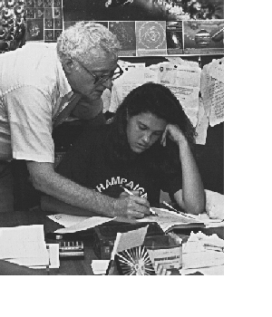

After 7 years of teaching in a junior high school, he realized there must be a more enjoyable and effective way to teach math. He searched for alternatives. This lead to designing new curriculum for NY State; learning about mathematics and creativity from Robert B. Davis (who died in Dec. '97) with The Madison Project; learning what real teaching is about by observing great teachers such as Sue Monell at Bank Street; teaching teachers; working on PLATO (a computer-based education system started at the U of IL); all before Don and Jerry invented The Math Program. This is a great organizational scheme which enables them to work with about 5 students at a time, in their homes, with students of all abilities and ages (3 to 73) and have time to write, learn, and work together.
The 1986 THE FRIEND OF CHILDREN AWARD was presented to Don by The Montessori School of C-U and The East Central Illinois Association for the Education of Young Children.
In 2008, Don was the recipient of an Excellence in Education Award, given by his alumni association at SUNY at Albany.
Don was asked to give an online presentation for Math2.0, a Google Math group, on August 4, 2010
Don 's presentation Calculus By and For Young People, ages 7 and up was accepted by the 2010 Global Education Conference and given on November 16, online.
Don had 3 students, a long time ago, who now bring their children to
work with Don- it doesn't get better than that!
Don has been blessed with a wonderful wife (of 58+ years), three fine sons, 6 terrific grandchildren and 3 greatgrandchildren! He is a watercolor artist (see the shell on his main page) and as a friend said, "he takes time to smell the flowers and gives them to people". See his page Don paints in watercolor with.. students and grandchildren
Don with Khaki (on the cover of his worksheet book), then age 17, a long time
ago, used the computer program Derive to
"zoom in" on a curve to find the slope of the tangent at a point on
the curve, leading to the derivative. She was preparing for her Fall calculus
class. (see Ch. 14). Khaki is now a teacher and using this book with her
students!

These are the good old days!